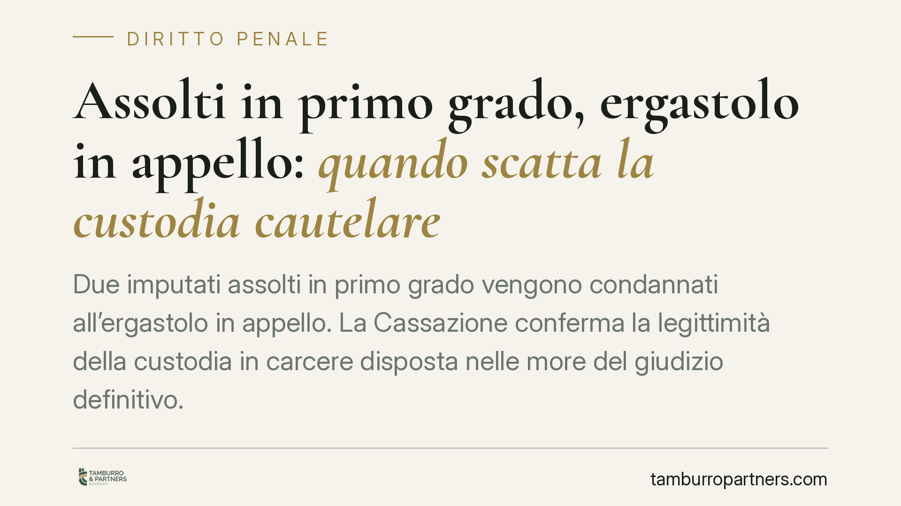

Assolti in primo grado, ergastolo in appello: quando scatta la custodia cautelare
Due imputati assolti in primo grado vengono condannati all'ergastolo in appello. La Cassazione conferma la legittimità della custodia in carcere disposta nelle more del giudizio definitivo. La pronuncia chiarisce un punto delicato: il giudizio cautelare è autonomo da quello di merito e una condanna, benché non definitiva, incide sulla valutazione dei gravi indizi e delle esigenze cautelari.

Il caso
Due cugini imputati per un reato punibile con l'ergastolo erano stati assolti dalla Corte d'assise in primo grado. In appello il verdetto si ribalta: condanna alla massima pena. Nelle more del ricorso per cassazione viene disposta la custodia cautelare in carcere, poi confermata dal Tribunale del riesame di Bologna.
La difesa contesta la legittimità della misura: si può privare della libertà chi è stato assolto in primo grado, in un processo ancora aperto? La Cassazione, Sezione I (estremi della pronuncia da verificare presso il repertorio ufficiale), risponde di sì, a determinate condizioni.
Inquadramento normativo
La disciplina delle misure cautelari personali si fonda su tre pilastri del codice di procedura penale.
L'art. 273 c.p.p. richiede i *gravi indizi di colpevolezza*: un compendio probatorio che renda altamente probabile la responsabilità dell'indagato o imputato. L'art. 274 c.p.p. individua le *esigenze cautelari* che giustificano la misura: pericolo di fuga, di reiterazione del reato, di inquinamento delle prove. L'art. 275 c.p.p. governa i criteri di scelta e la proporzionalità; per la custodia in carcere occorre poi l'art. 285 c.p.p.
Un chiarimento sul piano tecnico. La condanna in appello non "rafforza" genericamente il quadro accusatorio: essa costituisce un accertamento giurisdizionale di merito che incide sul giudizio di gravità indiziaria ex art. 273 c.p.p. — poiché un giudice del gravame ha ritenuto raggiunta la prova della responsabilità — e sulla valutazione delle esigenze cautelari ex art. 274 c.p.p., dato che la prospettiva di una condanna definitiva può aggravare, ad esempio, il pericolo di fuga.
Una precisazione doverosa rispetto a letture diffuse: l'art. 300 c.p.p. *non* è la base normativa della misura in questa vicenda. Quella norma disciplina l'estinzione delle misure a seguito di provvedimenti favorevoli (assoluzione, proscioglimento) e, al comma 5, il ripristino della misura in caso di annullamento in impugnazione di una sentenza di proscioglimento. È una dinamica diversa da quella qui in esame, dove la misura viene applicata *ex novo* dopo una condanna in appello. La fonte corretta resta negli artt. 273-274-275 e 285 c.p.p.
Perché la Cassazione conferma
Il punto centrale è l'autonomia del giudizio cautelare rispetto a quello di merito. Sono due piani distinti, con oggetto e finalità differenti: il primo valuta la sussistenza di indizi e di esigenze in funzione preventiva; il secondo accerta la responsabilità in via definitiva.
L'assoluzione in primo grado non "blinda" dunque l'imputato per il resto del processo. Se un successivo grado di giudizio approda a una condanna, il quadro cautelare può mutare, purché il giudice ne dia conto con motivazione adeguata.
Rileva inoltre l'art. 275, comma 3, c.p.p., che per determinati reati di particolare gravità prevede una presunzione relativa di adeguatezza della sola custodia in carcere. "Relativa" significa che la presunzione può essere superata: è la difesa a dover allegare elementi concreti da cui desumere l'insussistenza delle esigenze cautelari o l'adeguatezza di una misura meno afflittiva. In assenza di tali elementi, la custodia in carcere resta la scelta obbligata.
Implicazioni pratiche
Per chi affronta un processo penale per reati gravi il messaggio è netto. L'esito favorevole in primo grado non offre garanzie sulla libertà personale nei gradi successivi. Un ribaltamento in appello può aprire la strada a una misura cautelare anche a distanza di tempo dai fatti.
Sul piano difensivo, la presunzione dell'art. 275, comma 3, sposta di fatto l'onere di allegazione: non basta invocare il precedente proscioglimento, occorre costruire un'argomentazione mirata sulle esigenze cautelari attuali e concrete.
Cosa fare in concreto
- Prepara la fase cautelare fin dall'appello: raccogli in anticipo gli elementi utili a contrastare il pericolo di fuga o di reiterazione (radicamento familiare e lavorativo, condotta processuale).
- Contesta le esigenze cautelari sul piano dell'attualità e della concretezza, non limitandoti a richiamare l'assoluzione di primo grado.
- Verifica se il reato ricade nell'art. 275, comma 3, c.p.p.: in tal caso predisponi elementi idonei a vincere la presunzione relativa.
- Attiva il riesame nei termini e valuta il ricorso per cassazione sulla motivazione della misura.
- Consigliamo di affrontare il tema cautelare come procedimento autonomo, con una strategia distinta da quella del giudizio di merito.
Precisazione
Gli estremi della pronuncia (Sezione, numero, anno) andranno riscontrati sulle fonti ufficiali prima di ogni utilizzo argomentativo. Le valutazioni qui esposte hanno finalità divulgativa e non sostituiscono l'esame del caso concreto.
Contributo informativo a cura di Tamburro & Partners - Avv. Giuseppe Tamburro. Non costituisce parere legale.
Ogni condominio ha una storia a sé.
Se gestisci un'amministrazione e vuoi un confronto su una specifica questione condominiale, scrivi allo studio. Ti rispondiamo entro un giorno lavorativo.